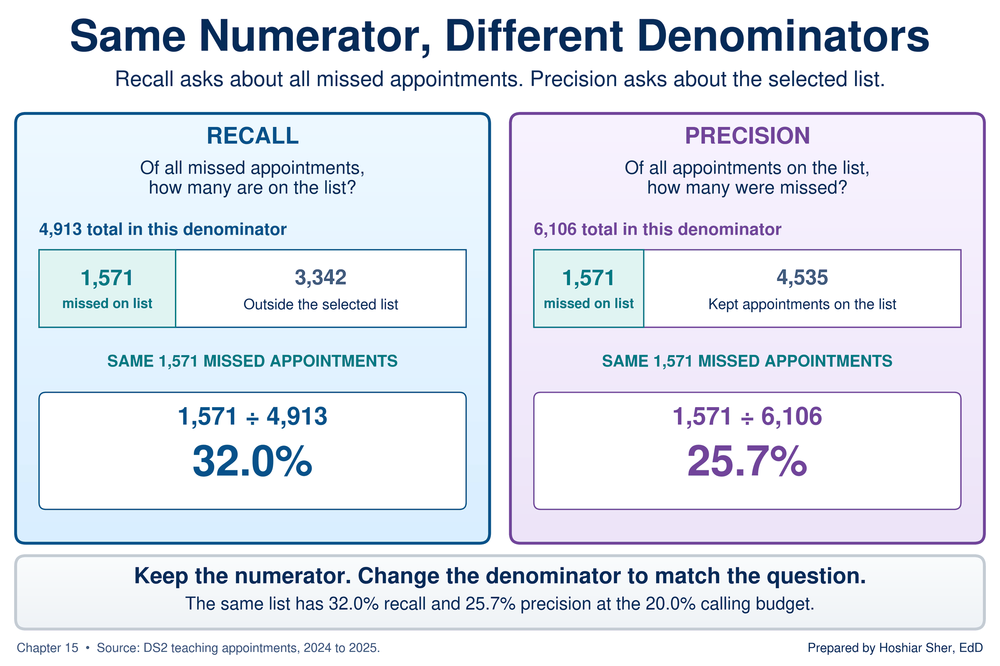
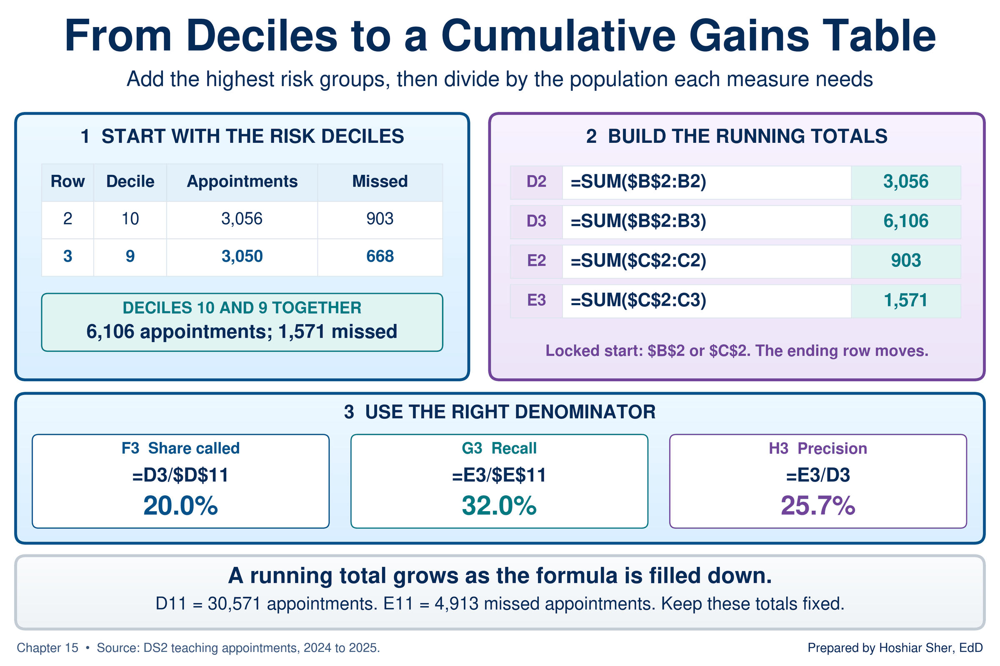
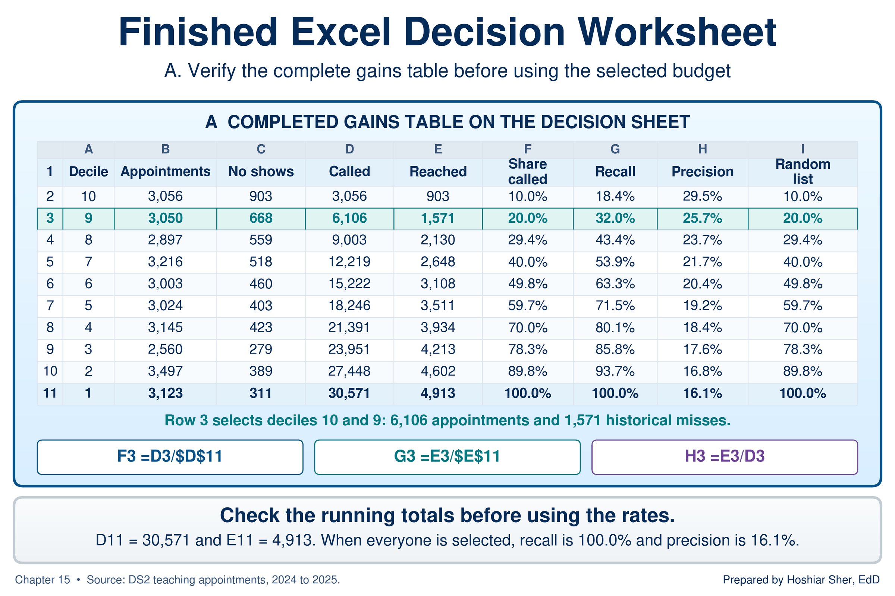
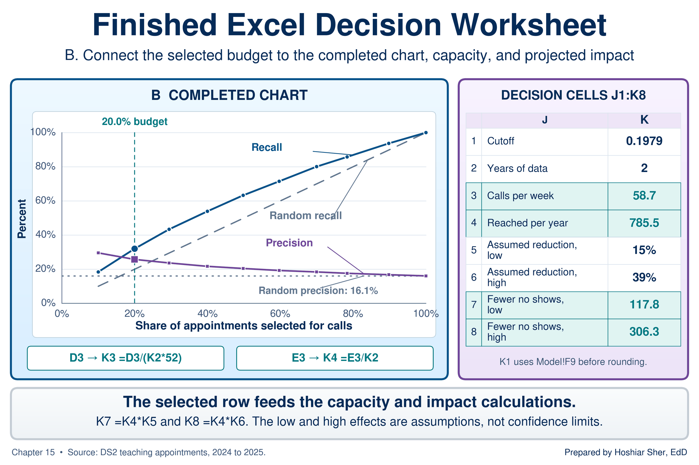
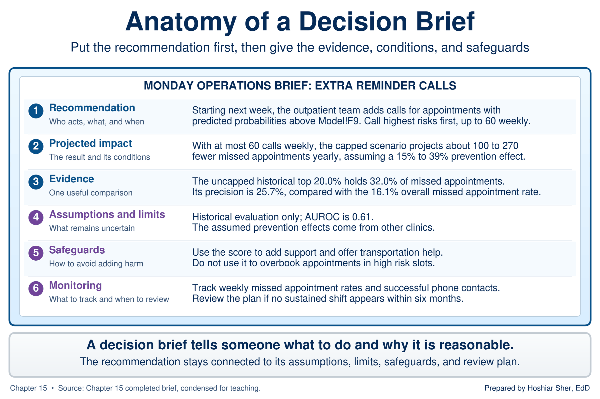
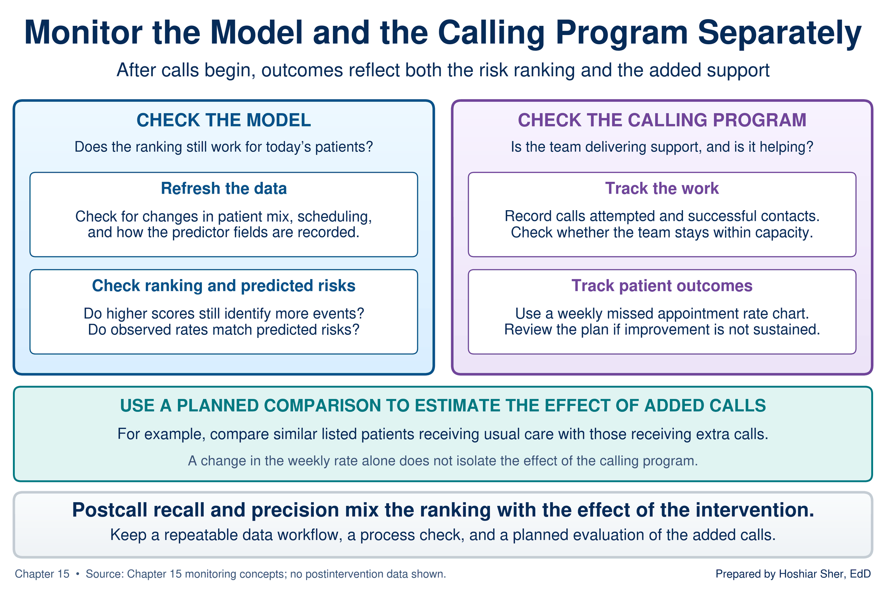

Applied Healthcare Analytics, Decision Support, and Capstone Communication
Opening scenario
The outpatient director at Riverbend Health System has read the Chapter 14 results: a model that ranks next week’s appointments by their risk of being missed. In Chapter 14, her staff had time to call about one patient in ten. She has since moved staff time to the calls, so the team can now make about 60 extra reminder calls a week, and the operations meeting is on Monday. She asks the analyst three questions: whom should we call, what should we expect, and what could go wrong? This chapter answers her questions in Excel and in a one-page brief she can act on; the scenario is illustrative, and the numbers come from the teaching dataset.
By the end of this chapter, you will be able to:
- Explain how an analysis moves from insight to action, and what makes an analysis decision support.
- Calculate cumulative gains, recall, and precision from a table of risk deciles in Excel.
- Choose a contact budget and its cutoff, and estimate the projected impact under a stated assumption.
- Write a one-page decision brief that leads with the recommendation and states its assumptions, limits, and safeguards.
Key concepts
Chapter 1 described four stages: data, information, insight, and action. Chapters 2 to 14 built the first three. You framed a question and defined a measure, cleaned and summarized the data, charted it against a baseline, and fitted models that rank risk. This chapter covers the last stage, turning an insight into a decision someone can carry out. It introduces no new regression model; its new tools are simple tables and calculations built from the Chapter 14 results.
Figure 1 previews the three questions the chapter answers.
![Figure 1: From a prediction to a decision: whom to call (the top 20.0 percent of eligible appointments, selected with the cutoff in Model!F9 and limited to 60 calls a week), what to expect (within the 60-call limit, the list would reach about 690 no-shows a year, and calls would prevent about 100 to 270 of them if they prevent 15 to 39 percent, as Part D shows), and what could go wrong (limits, safeguards, and monitoring). Source: the Chapter 15 decision-support example, based on datasets/DS2_appointments_clean.csv.](figures/generated/ch_15_prediction_to_decision.png)
From insight to action
Decision support is analysis aimed at a specific choice that a specific person must make. The Chapter 14 decile table is an insight: missed appointments are about three times as common in the highest-risk tenth as in the lowest. It becomes decision support when it answers the director’s question in her terms: call these patients, expect this result, and watch for these risks.
Three things move an insight to a decision. The first is a constraint, here 60 calls a week. The second is a rule that applies the model within that constraint. The third is an estimate of what the action will achieve. The rest of this section builds each one.
From a ranking to a contact list
A model that ranks risk does not say how many people to contact. That number comes from capacity. A contact budget is the number or share of cases a team can act on in a period, such as 20 percent of next week’s appointments.
The budget sets a cutoff, also called a threshold: the predicted probability above which a case goes on the list. Ranking the appointments and taking the top 20 percent is the same as calling every appointment whose predicted probability is above the value that separates the top fifth from the rest. Chapter 14’s decile boundaries already hold those values. A larger budget means a lower cutoff, and a smaller budget a higher one.
Recall and precision
Any contact list can be judged with two questions (Trevethan, 2017):
- Of all the patients who would miss their appointment, what share is on the list? This share is recall. Chapter 14 called the same quantity the true-positive rate.
- Of the patients on the list, what share would miss their appointment? This share is precision, also called the positive predictive value.
The comparison for both is a list chosen at random. A random 20 percent of appointments contains, on average, about 20 percent of the no-shows, so its recall is about equal to the budget. Its precision is, on average, the base rate, the share of all cases with the event, here 16.1 percent.
Recall = no-shows on the list ÷ all no-shows.
Precision = no-shows on the list ÷ appointments on the list.
A list built from a useful ranking has a higher recall than a random list of the same size would have on average, and a precision above the base rate.
Recall and precision share the same numerator, the no-shows on the list, and differ only in the denominator. Figure 2 shows both for a list of the top 20 percent of appointments.

The two measures move in opposite directions as the budget grows. A larger list reaches more of the no-shows, so recall rises. It also reaches further down the ranking, into appointments with lower risk, so precision falls toward the base rate. A cumulative gains chart, also called a cumulative response curve, plots recall against the share of cases contacted, with the random list as a diagonal for comparison (Provost & Fawcett, 2013). Figure 3 shows it for the no-show model.
![Figure 3: Cumulative gains for the no-show model. Calling appointments in order of predicted risk, a list of the top 20.0 percent (6,106 appointments) holds 32.0 percent of all no-shows (1,571 of 4,913), against 20.0 percent expected on average from a random list of the same size, a difference of 12.0 percentage points. A list that holds a no-show does not show that a call would prevent it. Source: datasets/DS2_appointments_clean.csv, 30,571 kept-or-missed appointments, January 2024 to December 2025.](figures/generated/ch_15_gains_curve.png)
Recall counts the no-shows a list reaches, not the no-shows a call prevents. Some patients on the list would miss their appointment even after a call, and the decile table cannot show how many. Prevention is a separate assumption, covered next.
Use Figure 3 and the 16.1 percent base rate. (1) A random list of 29.4 percent of appointments would reach about what share of all no-shows? (2) The model’s top three deciles, also 29.4 percent of appointments, reach 43.4 percent of them. In one sentence, explain what this comparison tells the director. (3) If the budget grows from 20 to 50 percent, would you expect precision to rise or fall, and why? The answer key is at the end of the chapter.
Projected impact
A projected impact is an estimate of what an action will achieve, stated with the assumption it depends on. For the calling plan, it has two parts: the no-shows the list reaches, which the data supply, and the share of those a call prevents, which the data do not supply and must be assumed.
Published studies give a range for that share. In a randomized trial of reminder calls to primary care patients with a high predicted risk, the no-show rate was 22.8 percent with the calls and 29.2 percent without them, about 22 percent lower (Shah et al., 2016). A large health system that added automated calls for high-risk patients to its text-message reminders saw no-shows fall from 11.3 to 9.6 percent, about 15 percent lower (Kavanaugh et al., 2026). A review of randomized trials found a median relative risk of 0.61 for phone reminders targeted by a predictive model, about 39 percent lower (Oikonomidi et al., 2023).
These studies used different patients, call methods, and comparison groups, so none of them predicts the effect at another clinic. A projected impact built from them is a scenario, not a forecast: it shows what would follow if the clinic’s effect fell within the published range. It is therefore stated as a range, from a low to a high assumption. Recalculating a result under different assumptions to see how much it changes is called a sensitivity analysis.
Figure 4 shows the calculation the walkthrough builds in Part D.
![Figure 4: From no-shows reached to no-shows prevented, without and with the 60-call limit. Without a limit, the 1,571 no-shows on the top-20-percent list over two years become 785.5 a year; assumed reductions of 15 and 39 percent give 117.8 and 306.3, about 120 to 310 fewer a year. With at most 60 calls a week across all 36,000 scheduled appointments, the calls reach about 1,380 no-shows over two years, about 690 a year; the same assumptions give about 100 to 270 fewer a year, the range the brief reports. Both ranges depend on the assumed effects and on appointment volume similar to past years; neither is a confidence interval. Source: datasets/DS2_appointments_clean.csv, January 2024 to December 2025, and the effect assumptions from the studies cited in the text.](figures/generated/ch_15_reached_not_prevented.png)
The decision brief
Decision-makers read in the opposite order from the way analysts work. The analysis runs from data to conclusion; the reader wants the conclusion first. Bottom line up front (BLUF) is the practice of stating the recommendation in the opening sentence and the support after it. United States federal plain-language guidance gives the same advice: state the purpose and the bottom line first, and put the most important information at the beginning (Digital.gov, n.d.).
A decision brief is a short document, usually one page, that follows that order. Table 1 lists its parts.
| Part | What it states |
|---|---|
| Recommendation | The action, in one sentence, with who does what and when |
| Projected impact | The expected result as a range, with the assumption behind it |
| Evidence | One chart or table, and the one or two numbers that matter |
| Assumptions and limits | What the estimate takes for granted and what the data cannot show |
| Safeguards | How the action avoids harm, and who checks |
| Monitoring | The measure to track, and the signal for changing course |
Lead with the recommendation, give the impact as a range with its assumption, and show one piece of evidence. Then state the limits and safeguards plainly, so the reader can judge the risk.
Limits and ethics
A recommendation carries the analyst’s name, so the analyst is responsible for stating what it cannot do. The no-show model ranks modestly, with an area under the receiver operating characteristic curve (AUROC) of 0.61 (Chapter 14), and many reasons for missing an appointment are not in the data.
Chapter 5 closed its discussion of fairness with four questions: “who is in this data, who is missing, what was actually measured, and could this measure disadvantage someone.” Ask them of the recommendation as well as the data. Chapter 14 showed that the same risk score can support patients, through calls or transportation help, or add a burden, through overbooking. The brief should name the supportive use and rule out the harmful one.
Walkthrough: from a risk ranking to a Monday decision
This walkthrough answers the director’s three questions. You build a gains table from the Chapter 14 risk deciles, chart it, choose a budget and its cutoff, estimate the projected impact, and write the decision brief. Every step uses functions from earlier chapters, and every step works in Excel for Windows, Excel for Mac, and Excel for the web. As in Chapter 14, the gains table uses the 30,571 eligible appointments, those that were later kept or missed; Part C returns to the appointments that were cancelled or rescheduled.
Chapter 14 noted that reminder_sent_flag records the
clinic’s routine reminder, sent zero to six days before the visit, so a
list prepared a week ahead would not know it. A model refitted without
that variable gives almost the same list: at a 20 percent budget, recall
32.1 percent and precision 25.8 percent, with a cutoff of 0.198 and an
AUROC of 0.615. The walkthrough keeps the Chapter 14 model so that its
numbers match your workbook; a list used in practice would come from the
refitted model.
Before you start: open the workbook you built in the Chapter 14
walkthrough. It has the Appts Table with the
decile column and the Model sheet with the
decile boundaries in F2:F11.
If you do not have that workbook, open a new blank workbook, rename
its sheet Decision, and type the headers from step 2 into
A1:H1. Type the values in Table 2 into A2:C11,
then continue at step 6. In step 16, type 0.1979 in
K1. The boundary for the top three deciles, used in
Exercise 2, is 0.1760.
| Decile | Appointments | No-shows |
|---|---|---|
| 10 | 3,056 | 903 |
| 9 | 3,050 | 668 |
| 8 | 2,897 | 559 |
| 7 | 3,216 | 518 |
| 6 | 3,003 | 460 |
| 5 | 3,024 | 403 |
| 4 | 3,145 | 423 |
| 3 | 2,560 | 279 |
| 2 | 3,497 | 389 |
| 1 | 3,123 | 311 |
Part A. Build the gains table. The table lists the
deciles from highest risk to lowest, then adds running totals. A running
total uses a range whose first cell is locked with $ and
whose last cell moves as the formula is filled down (Chapter 6;
Microsoft, n.d.-c; Microsoft, n.d.-d).
Figure 5 traces the formulas for the first two deciles before you enter them.

- Add a worksheet, and name it
Decision. - In
A1:H1, type the headersDecile,Appointments,No-shows,Called,Reached,Share called,Recall, andPrecision. - Type
10inA2and9inA3. SelectA2:A3, and drag the fill handle down toA11, which shows1. - In
B2, enter=COUNTIFS(Appts[decile], A2), and fill down toB11.B2shows3056.COUNTIFScounts the rows that meet every condition you give it (Chapter 9; Microsoft, n.d.-a). - In
C2, enter=COUNTIFS(Appts[decile], A2, Appts[no_show_flag], 1), and fill down toC11.C2shows903. - In
D2, enter=SUM($B$2:B2), and fill down toD11. Each cell adds the appointments from decile 10 down to its own row;D11shows30571. - In
E2, enter=SUM($C$2:C2), and fill down toE11.E11shows4913. - In
F2, enter=D2/$D$11, and fill down toF11. This is the share of all appointments on the list. - In
G2, enter=E2/$E$11, and fill down toG11. This is recall. - In
H2, enter=E2/D2, and fill down toH11. This is precision. - Select
F2:H11, click Home > Number > Percent Style, and click Increase Decimal once.
Check your table against Table 3 before you continue.
| Row | Deciles on the list | Share called | Recall | Precision |
|---|---|---|---|---|
| 2 | 10 | 10.0% | 18.4% | 29.5% |
| 3 | 10 and 9 | 20.0% | 32.0% | 25.7% |
| 4 | 10 to 8 | 29.4% | 43.4% | 23.7% |
| 11 | All | 100.0% | 100.0% | 16.1% |
Part B. Chart recall and precision. A scatter chart with lines shows how both measures change as the list grows, with the random list for comparison. Your chart has the three lines in Figure 6.
- In
I1, typeRandom list. InI2, enter=F2, fill down toI11, and format the column as a percentage with one decimal. - Select
F1:I11. On the Insert tab, choose the scatter chart type Scatter with Straight Lines and Markers (in Excel for the web, Insert > Scatter, then that option). Charts were introduced in Chapter 6 (Microsoft, n.d.-b). - Give the chart the title
Recall and precision by share of appointments called, and label the horizontal axisShare calledand the vertical axisPercent.
Figure 6 shows the result, with three explanatory marks added that your chart does not need: the dashed line at the 20 percent budget, the dotted line at the base rate, and the labels. Excel starts each line at the first decile, about 10 percent; the figure extends the recall and random lines to 0 for illustration. The recall line rises above the random line, and the precision line falls toward the base rate of 16.1 percent, which it reaches at 100 percent. Figure 3 showed the recall and random lines alone.
![Figure 6: Recall, precision, and the random list as the share of appointments called grows, the three series charted from Decision!F1:I11 in steps 12 to 14. The dashed vertical line at the 20.0 percent budget, the dotted line at the 16.1 percent base rate, the labels, and the starting point at 0 are added for explanation. At the budget, recall is 1,571 ÷ 4,913 = 32.0 percent and precision 1,571 ÷ 6,106 = 25.7 percent, against 20.0 and 16.1 percent expected on average from a random list. Source: datasets/DS2_appointments_clean.csv, 30,571 kept-or-missed appointments, January 2024 to December 2025.](figures/generated/ch_15_threshold.png)
Part C. Choose the budget and the cutoff. The data cover two years, 2024 and 2025, so a weekly figure divides by 104 weeks.
- In
J1:J8, type the labelsCutoff,Years of data,Calls per week,Reached per year,Assumed reduction, low,Assumed reduction, high,Fewer no-shows, low, andFewer no-shows, high. - In
K1, enter=Model!F9, the upper boundary of decile 8. It shows about0.1979: every appointment above this predicted probability is in decile 9 or 10. - In
K2, type2. - In
K3, enter=D3/(K2*52). It shows about58.7, so on average the top 20 percent fits the director’s 60 calls a week.
The cutoff turns the budget into a rule staff can apply: each week,
call the patients whose appointments have a predicted no-show
probability above the value in K1, about 0.198. Compare
probabilities with the cell, not a rounded number, so appointments near
the boundary are placed consistently. Chapter 14 used “above 0.20” as an
example; the data place the boundary at almost exactly that value.
The 58.7 counts only eligible appointments. A list prepared a week ahead cannot yet know which appointments will be cancelled or rescheduled, so it includes those as well. Across all 36,000 scheduled appointments, 7,396 were above the cutoff, about 71 a week, and more than 60 in 88 of the 105 calendar weeks. A simple rule handles those weeks: call the appointments in order of predicted probability, highest first, until the 60 calls are used.
Figure 7 summarizes the plan and the weekly rule.
![Figure 7: From 60 calls to a contact list. The historical data give 6,106 eligible appointments in the top two deciles over 104 weeks, 58.7 a week on average (about 71 a week once later cancellations and rescheduled appointments are included), and a cutoff in K1 from Model!F9, about 0.1979. Each week, staff keep the appointments above the cutoff, rank them from highest predicted probability to lowest, and call in that order until 60 calls are used or the list ends. Source: datasets/DS2_appointments_clean.csv, 30,571 kept-or-missed appointments, January 2024 to December 2025.](figures/generated/ch_15_contact_list_rule.png)
Part D. Estimate the projected impact.
- In
K4, enter=E3/K2. It shows785.5, the no-shows a year on the top-20-percent list. - In
K5, type0.15, and inK6, type0.39, the low and high assumptions from the published studies. Format both as percentages. - In
K7, enter=K4*K5, and inK8, enter=K4*K6. They show about117.8and306.3.
Under these scenarios, the calls would prevent about 120 to 310
missed appointments a year. The range rests on three assumptions: next
year’s appointments resemble those of 2024 and 2025, the model ranks
them as well as it ranked past appointments, and a call prevents 15 to
39 percent of the no-shows it reaches, as in other settings. The range
is wide because the assumption is uncertain, and the brief should say
so. The precision in H3 adds a cost to weigh: about three
in four of the patients called would have attended anyway.
The 785.5 in K4 assumes that staff can call every
eligible appointment above the cutoff. With the 60-call limit and the
extra appointments that are later cancelled or rescheduled, the
highest-ranked 60 each week would have included about 1,380 no-shows
over the two years, 690 a year. At 15 and 39 percent, that gives about
100 to 270 fewer missed appointments a year. The brief reports this
lower range, because it reflects the calls the team can make; 120 to 310
is the upper case with unlimited calls.
Check your finished Decision sheet against Figure 8 and
Figure 9 before you continue.


Part E. Write the decision brief. Use the six parts in Table 1. A finished example follows, and Figure 10 shows a condensed version laid out as a one-page brief.
- Recommendation. Starting next week, the outpatient team calls each patient whose appointment has a predicted no-show probability above 0.198, in addition to the routine reminder, up to 60 calls a week. In most weeks more appointments are above the cutoff than that, so the highest probabilities are called first.
- Projected impact. The list holds about 32 percent of all no-shows while covering 20 percent of appointments. Within 60 calls a week, the calls would reach about 690 no-shows a year. If a call prevents 15 to 39 percent of them, as in published studies, the calls would prevent about 100 to 270 missed appointments a year. This is a scenario range based on other settings, not a forecast for this clinic.
- Evidence. Figure 6: at a 20 percent budget, recall is 32.0 percent and precision 25.7 percent, against 20.0 and 16.1 percent for random calls.
- Assumptions and limits. The model ranks modestly (AUROC 0.61), was tested on past appointments only, and cannot see many reasons for missing an appointment. The prevention rate comes from other clinics, not this one.
- Safeguards. The score is used only to add support. Callers offer transportation help to patients who report a barrier. High-risk slots are not overbooked.
- Monitoring. Track the weekly no-show rate on a run chart (Chapter 11). Record how many patients on the list were contacted by phone. To measure what the calls add, randomly assign a small share of the listed patients to usual care and compare their no-show rate with that of the patients who were called. Before the program starts, set the length of this pilot, the number of patients it needs, and the difference that would justify continuing, with help from a statistician, because a small pilot can miss a real effect. Compare completion rates across patient groups, such as race and ethnicity or transportation barrier, to check that the benefit reaches all of them.

This brief is where the work of the book leads: from a question about missed appointments in Chapter 1 to a specific action, its expected result, and its limits. Appendix A applies the same sequence to a question you choose yourself, and its final phase asks for a brief like this one.
Practice on your own
Practice A: calls after discharge
A care-transitions team can call about 20 percent of discharged
patients in the week after they leave the hospital. Use the readmission
model from Chapter 14 Practice A, fitted to the 8,030 stays in
datasets/DS4_inpatient_clean.csv with complete 30-day
follow-up, 667 of them (8.3 percent) followed by a readmission.
- Open your Chapter 14 Practice A workbook, with the
StaysTable, itsdecilecolumn, and the decile boundaries inModel!F2:F11. If you do not have it, set up aDecisionsheet as in the walkthrough’s fallback, type the values in Table 4 intoA2:C11, start step 2 at walkthrough step 6, and use0.1042as the cutoff in step 4. - Repeat walkthrough steps 1 to 11, using
Stays[decile]andStays[readmission_30d_flag]in steps 4 and 5, and the headersStaysandReadmissionsinB1andC1. - Repeat steps 12 to 14 to chart recall and precision.
- In
K1, enter=Model!F9for the cutoff at a 20 percent budget. - Write a three-sentence brief: the recommendation with its cutoff, the share of readmissions the list reaches, and one limit.
| Decile | Stays | Readmissions |
|---|---|---|
| 10 | 800 | 111 |
| 9 | 794 | 84 |
| 8 | 802 | 80 |
| 7 | 813 | 81 |
| 6 | 790 | 64 |
| 5 | 798 | 69 |
| 4 | 808 | 53 |
| 3 | 809 | 38 |
| 2 | 804 | 44 |
| 1 | 812 | 43 |
Solver’s coefficients can differ from the answer key’s in a later decimal place, which can move a few stays between deciles. Your recall and precision should agree with the answer key’s to within about 1 percentage point. Compare the gap between the recall line and the random line with the walkthrough’s, and explain the difference using the two models’ AUROC values, 0.61 and 0.60, and their decile rates.
From an analysis to a system. A one-time analysis answers a question once; a decision-support system answers it every week. That requires a scheduled data refresh, a repeatable workflow such as the one in Chapter 7, and a monitoring chart. It also requires a check on the model itself.
Dataset shift. A model learns from past cases, and the cases it ranks later may differ: a new patient population, a new scheduling system, or a change in how a variable is recorded. A mismatch between the data a model was developed on and the data it is applied to is called dataset shift (Finlayson et al., 2021). In one case reported by Finlayson et al. (2021), a hospital switched off a widely used sepsis alert in April 2020 after changes in its patients during the COVID-19 pandemic produced false alerts.
Once the calls begin, they change the outcomes of the patients on the list, so recall and precision measured afterward mix the model’s ranking with the effect of the calls. Checking the model itself needs a comparison, such as a small group of listed patients who receive usual care.
Figure 11 separates the two kinds of monitoring.

Weighing costs. This chapter set the cutoff from capacity. A cutoff can also be set by weighing the cost of a wasted call against the benefit of a prevented no-show. Decision curve analysis is one formal method (Vickers & Elkin, 2006).
Penn Medicine asked 186 patients who had missed an appointment why, and the most common answer, from 22 percent, was that they did not know they had one. The health system then used its electronic health record no-show model to identify patients at high risk, and tested an automated phone call added to its usual text-message reminders. In a four-week randomized trial in 2024 with 59,994 high-risk patients, the no-show rate was 9.6 percent with the added call and 11.3 percent without it. The effect was largest in the highest-risk quarter of patients, and completed appointments rose most among Black patients, narrowing an existing gap.
The calls were then extended to all high-risk patients, and follow-up of more than 244,000 of them over six months showed that the higher completion rate was sustained (Kavanaugh et al., 2026).
The same kind of score supported patients here, by adding a reminder. Chapter 14 described a scheduling study in which the same kind of score, used to overbook, produced longer waits for Black patients in the authors’ simulations (Samorani et al., 2022). The difference lies in the decision, which is why the brief names its safeguards.
- Decision support turns an insight into an action for a specific decision-maker: it needs a constraint, a rule that applies the model within it, and an estimate of the result.
- A contact budget sets the cutoff. Recall is the share of all events a list reaches; precision is the share of the list with the event. On average, a random list has recall equal to its size and precision equal to the base rate.
- A gains table in Excel lists deciles from highest to lowest risk and
uses running totals,
=SUM($C$2:C2), to calculate recall and precision at each budget. - Reaching an event is not preventing it. A projected impact multiplies the cases reached by an assumed effect, stated as a range from published evidence.
- A one-page decision brief leads with the recommendation, then gives the impact, one piece of evidence, the assumptions and limits, the safeguards, and the monitoring plan.
- Using Chapter 1’s four stages, explain in three or four sentences how the no-show analysis moved from data to action, and identify which part of this chapter supplies the action.
- In your walkthrough gains table, find recall and precision for a
budget of about 30 percent (deciles 10 to 8). Compare both with a random
list of the same size, and state the cutoff for that budget from
Model!F8, or 0.1760 if you typed the table. - A colleague reports that “calling the top 20 percent will prevent 32 percent of no-shows.” Identify the error, and rewrite the statement correctly.
- The director can afford only 30 calls a week. Recalculate the projected impact for the top 10 percent, using the same low and high assumptions, and explain how recall and precision change compared with the 20 percent plan.
- Using
datasets/DS4_inpatient_clean.csvand your Practice A gains table, write a one-page decision brief for the care-transitions team with all six parts in Table 1. - Apply two of the Chapter 5 fairness questions to the walkthrough’s recommendation, and name one safeguard you would add to the brief as a result.
Try It. (1) About 29.4 percent: a random list reaches no-shows in proportion to its size. (2) Calling the top three deciles by predicted risk reaches about 14 percentage points more of the no-shows than calling the same number of patients at random, so the ranking makes the same calling effort reach more of the patients who would miss. (3) Fall. A larger list reaches further down the ranking, into appointments with lower risk, so a smaller share of the patients called would have missed; precision moves toward the base rate of 16.1 percent, which it reaches when everyone is called.
Practice A check values. With Solver’s unrounded
coefficients, as in Table 4, the decile counts from 10 down to 1 are
800, 794, 802, 813, 790, 798, 808, 809, 804, and 812 stays, with 111,
84, 80, 81, 64, 69, 53, 38, 44, and 43 readmissions. At a 20 percent
budget (deciles 10 and 9), the list holds 1,594 stays and 195
readmissions: share called 19.9 percent, recall 29.2 percent, and
precision 12.2 percent, against a base rate of 8.3 percent. The cutoff
in K1 is about 0.1042. If you typed the four-decimal
coefficients from the Chapter 14 answer key instead, a few deciles can
differ by up to five stays and the cutoff is about 0.1038.
Sample brief: “Each week, call every discharged patient whose predicted readmission probability is above 0.104, about one patient in five. The list holds about 29 percent of all 30-day readmissions. The model ranks modestly (AUROC 0.60) and uses only three variables, so most readmissions fall outside the list.” The gap between the recall line and the random line is slightly smaller than in the walkthrough (29.2 against 32.0 percent at a 20 percent budget), consistent with the readmission model’s slightly lower AUROC and its flatter decile rates, 4.7 to 13.9 percent against 10.0 to 29.5 percent.
Figure 12 compares the two applications.
![Figure 12: The same gains-table method applied to two outcomes. Appointment calls: 6,106 of 30,571 appointments selected, 1,571 of 4,913 no-shows on the list, recall 32.0 percent, precision 25.7 percent, base rate 16.1 percent, cutoff about 0.1979. Calls after discharge: 1,594 of 8,030 stays selected, 195 of 667 readmissions on the list, recall 29.2 percent, precision 12.2 percent, base rate 8.3 percent, cutoff about 0.1042. The effect assumptions for appointment calls do not carry over to calls after discharge. Source: datasets/DS2_appointments_clean.csv and datasets/DS4_inpatient_clean.csv.](figures/generated/ch_15_same_workflow.png)
Exercises. Answers to the end-of-chapter exercises are provided to instructors in the instructor answer guide.
- Digital.gov. (n.d.). Organize the information. U.S. General Services Administration. https://digital.gov/guides/plain-language/principles/organize
- Finlayson, S. G., Subbaswamy, A., Singh, K., Bowers, J., Kupke, A., Zittrain, J., Kohane, I. S., & Saria, S. (2021). The clinician and dataset shift in artificial intelligence [Letter to the editor]. New England Journal of Medicine, 385(3), 283–286. https://doi.org/10.1056/NEJMc2104626
- Kavanaugh, L., Thomas, S., Lynch, S., Leri, D., Xiong, R. A., Xu, L., Snider, C. K., Ebert, J. P., Harhay, M. O., Lu, Y., Orwig, N., Desir, N., Encarnacion, I. N., Mollanazar, N., Thomas, R., Bae, C., Gitelman, Y., Hahn, L., Lee, K., . . . Delgado, M. K. (2026). Automated calls added to SMS reminders reduce missed appointments among high-risk patients. NEJM Catalyst Innovations in Care Delivery, 7(6). https://doi.org/10.1056/CAT.25.0322
- Microsoft. (n.d.-a). COUNTIFS function. Microsoft Support. https://support.microsoft.com/en-us/excel/functions/countifs-function
- Microsoft. (n.d.-b). Create a chart from start to finish. Microsoft Support. https://support.microsoft.com/en-us/excel/get-started/create-a-chart-from-start-to-finish
- Microsoft. (n.d.-c). SUM function. Microsoft Support. https://support.microsoft.com/en-us/excel/functions/sum-function
- Microsoft. (n.d.-d). Switch between relative, absolute, and mixed references. Microsoft Support. https://support.microsoft.com/en-us/excel/switch-between-relative-absolute-and-mixed-references
- Oikonomidi, T., Norman, G., McGarrigle, L., Stokes, J., van der Veer, S. N., & Dowding, D. (2023). Predictive model-based interventions to reduce outpatient no-shows: A rapid systematic review. Journal of the American Medical Informatics Association, 30(3), 559–569. https://doi.org/10.1093/jamia/ocac242
- Provost, F., & Fawcett, T. (2013). Data science for business: What you need to know about data mining and data-analytic thinking. O’Reilly Media.
- Samorani, M., Harris, S. L., Blount, L. G., Lu, H., & Santoro, M. A. (2022). Overbooked and overlooked: Machine learning and racial bias in medical appointment scheduling. Manufacturing & Service Operations Management, 24(6), 2825–2842. https://doi.org/10.1287/msom.2021.0999
- Shah, S. J., Cronin, P., Hong, C. S., Hwang, A. S., Ashburner, J. M., Bearnot, B. I., Richardson, C. A., Fosburgh, B. W., & Kimball, A. B. (2016). Targeted reminder phone calls to patients at high risk of no-show for primary care appointment: A randomized trial. Journal of General Internal Medicine, 31(12), 1460–1466. https://doi.org/10.1007/s11606-016-3813-0
- Trevethan, R. (2017). Sensitivity, specificity, and predictive values: Foundations, pliabilities, and pitfalls in research and practice. Frontiers in Public Health, 5, Article 307. https://doi.org/10.3389/fpubh.2017.00307
- Vickers, A. J., & Elkin, E. B. (2006). Decision curve analysis: A novel method for evaluating prediction models. Medical Decision Making, 26(6), 565–574. https://doi.org/10.1177/0272989X06295361
- Base rate
- The share of all cases that have the event, such as the overall no-show rate; the precision of a list chosen at random.
- Bottom line up front (BLUF)
- The practice of stating the conclusion or recommendation first and the supporting detail after it.
- Contact budget
- The number or share of cases a team can act on in a period, such as the patients it can call each week.
- Cumulative gains
- A chart or table of the share of all events reached by contacting the top-ranked share of cases, compared with a random list.
- Cutoff
- The predicted probability above which a case is placed on a list for action; also called a threshold.
- Dataset shift
- A change between the cases a model was fitted to and the cases it is later applied to, which can reduce its accuracy.
- Decision brief
- A short document, usually one page, that leads with a recommendation and then gives the projected impact, evidence, assumptions and limits, safeguards, and monitoring plan.
- Decision support
- Analysis aimed at a specific choice that a specific person must make.
- Eligible appointment
- An appointment that was later kept or missed; cancelled and rescheduled appointments are excluded, following the no-show measure in Chapter 4.
- Precision
- Of the cases on a list, the share that have the event; also called the positive predictive value.
- Projected impact
- An estimate of what an action will achieve, stated with the assumption it depends on.
- Recall
- Of all the cases with the event, the share that are on a list; also called the true-positive rate or sensitivity.
- Sensitivity analysis
- Recalculating a result under different assumptions to see how much it changes.
Cite this chapter
@incollection{sher2026ch15,
author = {Sher, Hoshiar J.},
title = {Applied Healthcare Analytics, Decision Support, and Capstone Communication},
booktitle = {Introduction to Healthcare Data Analytics},
year = {2026},
doi = {10.5281/zenodo.23327956},
url = {https://yar177.github.io/intro-to-HDA-site/ch15.html}
}